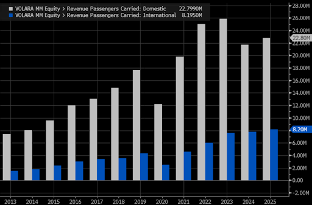
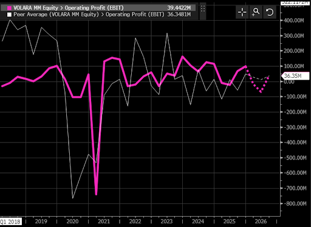
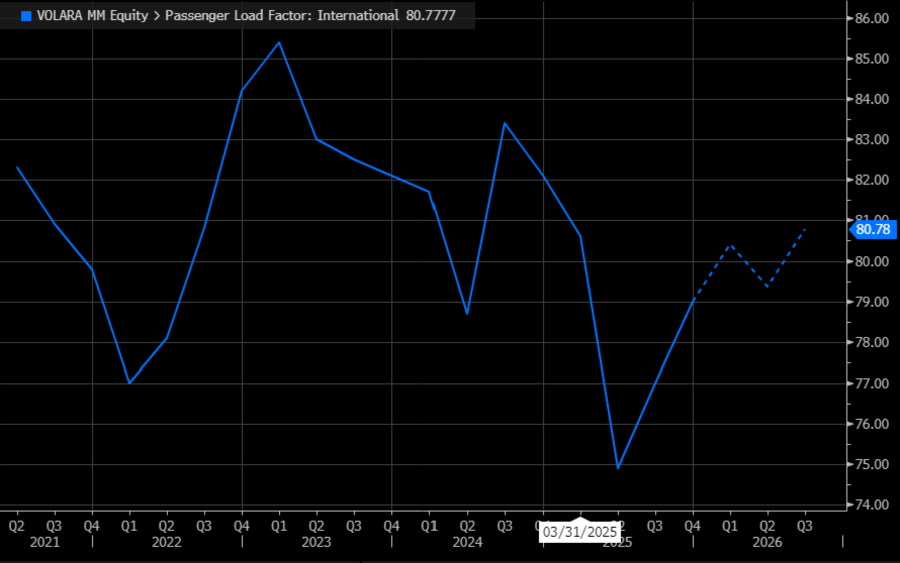

- Volaris and Viva announced a merger in December 2025 under parent company Grupo Más Vuelo, which would control over 70% of Mexico's domestic aviation market and make it the largest single operator of international flights.
- The deal faces hurdles from Mexico's new National Antitrust Commission, in its first major stress test. Citi analyst Filipe Nielsen says it is "hard to see the deal being approved intact."
- Passengers on key US–Mexico diaspora routes fear higher fares if the two budget carriers — whose fares run roughly half that of Aeromexico — lose competitive pressure.
- Neither airline has disclosed details about workforce impacts on a combined staff exceeding 12,000 employees.
Last summer, Korina Hernandez Valdez paid for her bags, selected a pair of non-reclining seats, and packed herself a burrito before boarding the inaugural three-hour Volaris flight from Oakland to Zacatecas - the Mexican city where her family has lived for decades, but was previously only reachable by connecting through a major hub like Dallas or Houston. She had flown with Volaris before, to their central hub in Guadalajara, but little did she know the airline that was profiting off her tickets would save up the money to purchase fellow budget airline Viva later in the year - potentially creating a more competitive international airline or stifling competition to Mexico.
Volaris, - one of Mexico's two dominant ultra-low-cost carriers,- built its business around customers like Hernandez Valdez, who travel from cities like Oakland, Fresno, and Ontario to smaller destinations in Mexico, such as Zacatecas, Morelia, and Leon. US legacy airlines rarely touch these routes - electing to connect through major hubs-, and Volaris just embarked on a high-stakes effort to reach more city pairs.
In December 2025, Volaris and Viva said they would merge under a new parent company -- Grupo Mas Vuelo -- with each airline holding a 50% stake. The combined entity would control more than 70% of Mexico's domestic aviation market and become the country's largest single operator of international flights. Since 2013, Volaris has nearly tripled the number of domestic passengers its carried - 22.8 million in 2025 - and carrierd five times as many international passengers - 8.2 million in 2025.
Volaris Passengers Carried Between 2013–2025
Domestic and international passengers carried annually, in millions. Between 2021–2023, the airline annually topped the number of passengers it handled until dropping off in 2024. (Source: Bloomberg)

Following the announcement, Bloomberg data showed the majority of analysts recommended buying shares as Volaris's stock jumped by 21% from 7.82 to 9.49. The airlines said the merger would bring down the cost by creating a company that could operate with greater economies of scale - a single entity that could negotiate lower prices for the procurement of supplies and aircraft, and operate with greater efficiency at airports.
But the deal has also drawn scrutiny from competition regulators and raised concerns that the low fares both airlines' customers have come to expect could vanish along with the jobs of thousands of workers whose roles could be considered redundant and eliminated in the name of efficiency.
Hernandez Valdez said a big boost in prices would test her loyalty to Volaris and that she'd opt for a different airline even if it meant routing herself through a bigger city nearby. "Would I fly to Zacatecas from Oakland if the price was much higher? Maybe," said Hernandez Valdez as she planned her annual summer trip. "But if I have to travel to San Francisco and take a slightly cheaper flight that connects somewhere else, then that's something I'll force myself to do if it doesn't work out with Volaris." Of the 15 other people interviewed for this article at Oakland and San Jose airports, most shared similar concerns over the merger: they'll drop Volaris if prices rise too much, but will remain for the time being because of its convenience.
Volaris's COVID-19 Success Story
For a short period right after the onset of the COVID-19 pandemic, Volaris looked like it had emerged as a major player in the US-Mexico market in an industry notorious for razor-thin profit margins. While other airlines bled cash because of a lack of passengers, the budget carrier dramatically outperformed its peers. Within a year, Volaris shares rose by 71.6% while its counterparts in the US struggled to return to pre-lockdown valuations. During the same time period from February 2020 to June 2021, American Airlines was down 27%, United by 47%, and Delta by 35%. Volaris stock reached record highs as people flocked to visit popular Mexican destinations while parts of the US were under lockdown restrictions.
Profits Flying High During the Pandemic
Volaris had a higher operating profit through most of the COVID-19 pandemic when compared to peer airlines. They had a large dip in 2021 because of more debt being acquired due to deferrals in payments on equipment and staff. (Source: Bloomberg)

By the end of 2025, Volaris held about a third of the domestic market share alongside Viva and legacy carrier Aeromexico. From 2020 to 2024, Volaris grew its total route count from roughly 187 to more than 225. The airline has almost doubled its fleet size from 86 at the start of 2020 to 155 by the end of 2025 through buying new planes and leasing, marking a calculated effort by management to expand.
Together, Volaris and Viva Would Hold Over 70% of Mexico's Domestic Market
Share of passengers carried by airline, December 2025. Source: Instituto Nacional de Migración
The airline's stock declined from a high of 22.84 per share in 2021 to 9.39 per share in 2025. Its stock has remained at 7.68 - even after positive reactions from shareholders following merger milestones. The performance gap shows how the airline has faced stunted growth. Delta and United have each received and surpassed their pre-pandemic stock valuations.
Volaris's New Approach
Volaris's descent from its pandemic-era high is a result of several factors weighing down the airline's growth. A contaminated metal powder used in the manufacturing of Pratt & Whitney turbofan engines between 2015 and 2021 has meant the airline has had to ground aircraft for lengthy maintenance checks, reducing the potential for income. Fuel expenses continue to rise as the US war with Iran disrupts international oil supply chains. In February 2025, following the re-election of US President Donald Trump, Volaris CEO Enrique Beltranena warned the airline could see a dip in travelers because of stricter travel and immigration policies.
"While our passengers are legal travelers between Mexico and the US, heightened concerns and noise surrounding border policies and enforcement have made them more cautious in their travel decisions. We have navigated similar challenges in the past and we believe that this is an adjustment period that will likely stabilize in the near-term."
Enrique Beltranena, Volaris CEO, February 2025 analyst call
Turbulent Times for Passengers Carried
Volaris sported an average of 82% before the re-election of Donald Trump, but less than a year after taking office, the airline saw fewer passengers flying internationally. (Source: Bloomberg)

Barclays analyst Pablo Monsivais said the airline delivered better than expected results for 4Q25 after the company's earnings call in February. He cited growth in capacity as a strong factor in profitability, and the results are why the firm classified Volaris's stock as overweight.
"Both companies have been competitors for many years, and events such as Covid, FAA downgrade to category 2 and P&W engines recall justify, in our view, a thorough re-assessment of the optimal structure for both. We think that, if approved, the market would become even more disciplined, which should also be positive for Aeroméxico, while less so for Mexican airport operators."
Pablo Monsivais, Barclays analyst
Volaris plan to address the increasing headwinds is to expand its network. During a quarterly earnings call in February 2026, Executive Vice President Holger Blankenstein outlined the new routes the airline was preparing to launch. The company is looking to grow two-thirds of its seat capacity to international markets, mainly between the US and Mexico, because of the high potential for profitability. Blankenstein pointed to 33 new routes set to launch in summer 2026, including US destinations like Detroit and Salt Lake City, and new operations from secondary Mexican cities like Puebla, Querétaro, and San Luis Potosí.
"These markets have demonstrated solid demand growth in recent years, supported by rising income levels and meaningful state-level investment, making them compelling opportunities for disciplined network expansion and sustainable profitability."
Holger Blankenstein, Volaris Executive VP, February 2026 earnings call
Starting new routes is not the only expansion effort Volaris is employing. The merger between Volaris and Viva has the potential to reshape the entire Mexican aviation industry. With over 70% of domestic seats belonging to one entity, the newly formed Grupo Mas Vuelo would wield immense power to determine prices, routes, and employment opportunities for Mexicans.
Critics and regulators have raised concerns that combining the country's two largest budget carriers would eliminate competition on dozens of routes, giving the new entity little incentive to keep fares low.
Data from both airlines' scheduled routes and planned expansions show head-to-head competition on more than 20 US-Mexico routes, including some of the busiest diaspora corridors between Fresno, Oakland, and Chicago and destinations like Guadalajara, Monterrey, and Leon. A merger would eliminate low-cost competition on these lucrative routes that circumvented busy US hubs. Volaris's monthly traffic reports show international flights regularly see load factors in the 83-87% range, signaling healthy demand by passengers.
Where the Two Airlines' Networks Overlap
Routes where Volaris and Viva compete directly would face no low-cost competition under a merger. Source: Cirium/Diio Mi; Volaris FY2025 IR; merger filing, 2025
Mexican President Claudia Sheinbaum signaled that she was open to the merger between the two budget airlines. "It has to be within the framework of the law, but it is a good thing that investment is increasing and Mexican companies in the aeronautics industry are growing," said Sheinbaum in a December press conference following the airlines' announcement. "It is very good news, as it will boost tourism and there will be more competition with other domestic and foreign airlines."
Mexico's antitrust regulator, the National Anti-Monopoly Commission (CNA) — which replaced the independent COFECE last year — will be tasked to scrutinize the details of the agreement. The regulatory body faces its first big test since it was created to combat monopolistic competition.
"This merger could be of great help for Volaris' profitability recovery," Citi analyst Filipe Nielsen wrote in a research note, "but it's hard to see the deal being approved intact."
What Happens to Workers and Passengers?
Behind the boardroom language of efficiency and cost reduction, the merger has raised uncomfortable questions for the 7,098 workers at Volaris. Duplicate crews and redundant administrative roles would result from two separate airlines combining. The airlines have yet to release information about projected earnings, but continue to push a "merger-of-equals" that will help each take advantage of economies of scale. The airlines would have a net lower liquidity as a percentage of revenue after merging, and allow for better handling of fixed costs like airline ownership or maintenance.
Neither Volaris nor Viva has provided public details about what the combined workforce would look like, where their headquarters would be, or what lines would be affected under Grupo Mas Vuelo.
Volaris did not respond to a request for comment on employment changes. On the public website about the merger that state workers will enjoy great job stability and "new growth opportunities and travel benefits for Viva and Volaris employees", but no further information is given on what such opportunities would look like.
Fleet Size Takes Off
Each square represents one aircraft. Combined, Grupo Más Vuelo would operate the largest commercial fleet in Mexico. Source: Volaris FY2025 IR; merger filing submitted to BMV, 2025
For Hernandez Valdez, the merger is not a business story. It is a question of whether the airline that flies her home can still afford to keep her as a customer. Average fares on Volaris and Viva remain roughly half of Aeromexico, but if the market becomes smaller, those costs and additional fees may rise.
"Volaris already makes me pay for bags, seats, and food," said Hernandez Valdez. "What more do they want to take from me? They fly to Oakland, not San Francisco. We work hard for our money, but we don't want to be priced out."